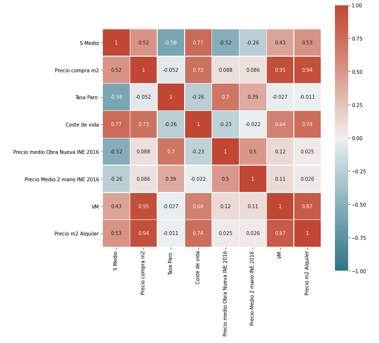
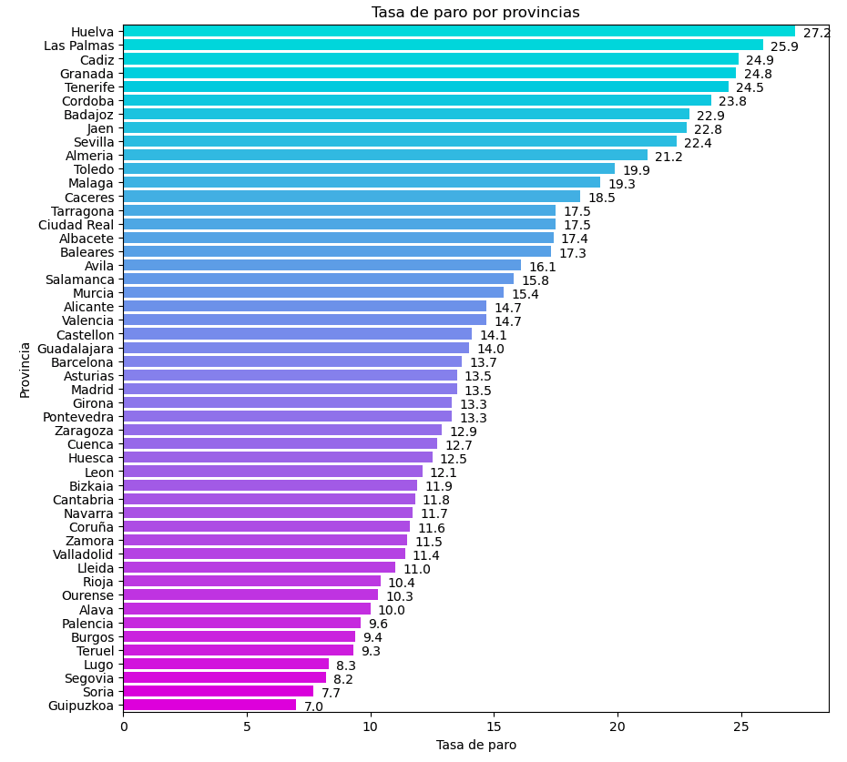
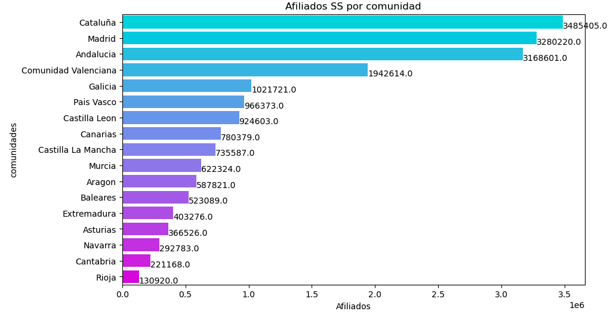
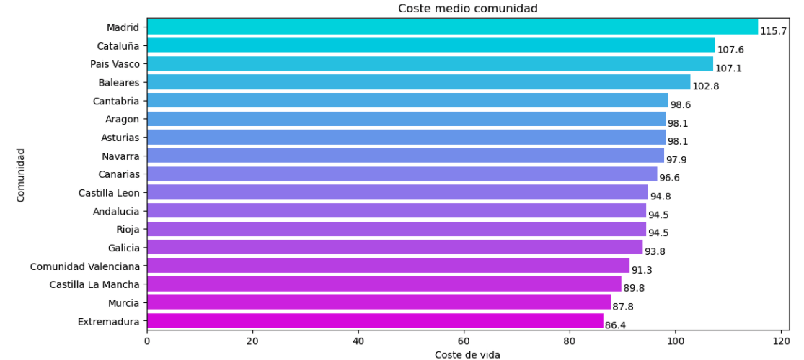
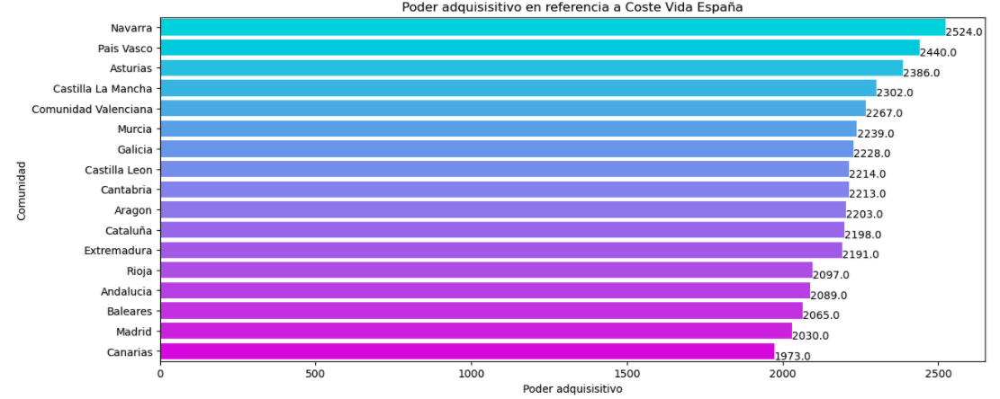
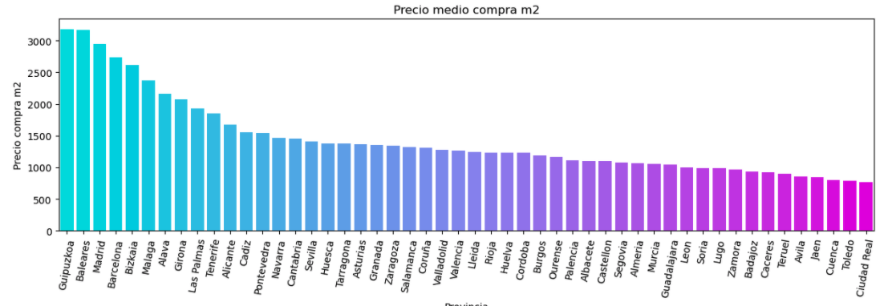
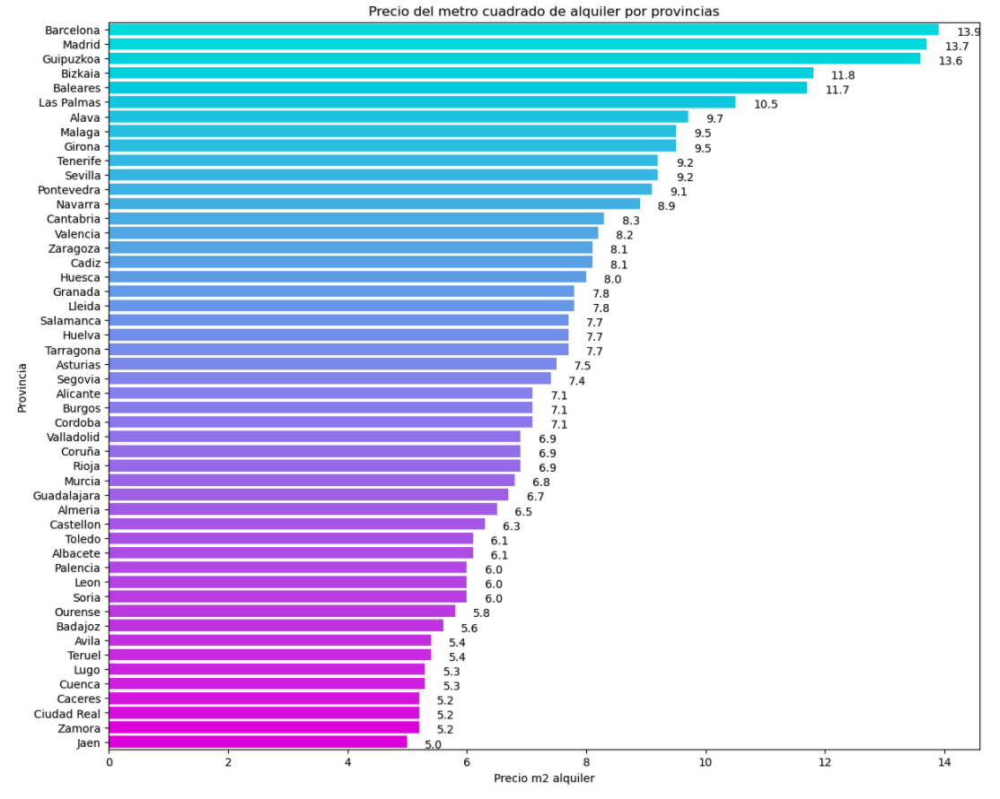

THE ECONOMIC POTENTIAL OF TELEWORK IN SPAIN

Personal project on the economic potential of telework.
The Exploratory Data Analysis is composed of data binding and analysis which you can see below or go to the Github repository where you can see notebook and even run an APP on streamlit where you can appreciate the whole project.
You can see a summary below or use the buttons to go to Github.
The project was done with Python, using Jupiter Notebook and developing an app in Streamlit
The most relevant tools used were:
- Panda and Numpy.
- For visualisation Matplotlib, Plotly and Seaborn.
- Project visualisation app using Streamlit.
Project summary
- For use in local streamlit. The versions used are:
- Streamlit==0.84.1
- Pandas==1.2.4
- Numpy==1.19.5
- Matplotlib==3.3.4
- Plotly==5.1.0
- Seaborn==0.11.1
- The initial idea
- Generic analysis of the labour market situation in terms of unemployment rate and social security affiliation.
- Wage performance in the different provinces, being able to assess the change in purchasing power depending on which province we are in.
- Comparison of property market prices in order to assess where to live.
-
To carry out this project I obtained data from two published papers, one from the Bank of Spain and the other on economic power in Spain, given that it is not a widely used measure in our country. I did web scraping in idealista to obtain the data of prices per m2 per province both for buying and selling, I downloaded data from INE about unemployment rate, Spanish social security affiliates, and deeded sale prices to obtain real sale data. (In the graph on the left we can see the Pearson correlation coefficient matrix, with some of these values).s
- Generic analysis of the labour market
-
One of the premises verified was that the provinces with the lowest unemployment rate do not necessarily imply that they are the dynamic ones for absorbing workers, as in many cases their social security affiliations are low and may imply that the labour market is already full.

- Wage performance
-
Salary per community
Although it is not visible in the graphs shown, if we consult the data used by the INE to calculate salaries, we can see that the difference in the median salary per community is very similar, we are talking about a range of less than €50 gross.
However, the median wage does have large differences, which implies that the minimum and maximum wages are quite different per region.
Cost of living
Cost of living has been obtained based on wage and house price metrics as indicated in the paper you can see in the Github links. As you can see communities like Madrid, have the cost of living above the Spanish average, considered as a country in 100.
Purchasing power.
If we analyse wages based on the cost of living, we see that the purchasing power changes radically for some communities, communities such as Madrid, become the penultimate in purchasing power based on the average cost of living in Spain.
To calculate the purchasing power, we have calculated a modifier based on the cost of living in Spain and multiplied it by the average salary.
- Comparison of property market prices
-
As we can see from the correlation matrix, the purchase price and rental price have a direct relationships

Once you have the correct version, clone repository, and from SRC, execute: streamlit run EDA_Teletrabajo_main.py
The initial idea arose from a paper by the Bank of Spain on telework in Spain precovid and the potential future of telework, which led me to the following approach for this EDA.
Verify the economic potential and the possibility of choosing your place of residence on the basis of personal and non-employment preferences, which will lead us to analyse the following points
In the final project, if you use the developed streamlit app you can find more details of the EDA, along with some tools developed such as a calculator to see how much the purchasing power changes if you work in one province and live in another. Or a mortgage calculator updated with data from JUN 21, where with a few parameters it tells you the possible viability of the mortgage, amortization table, instalment ...